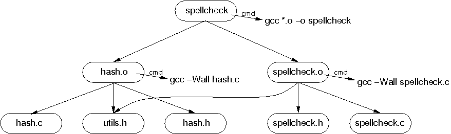
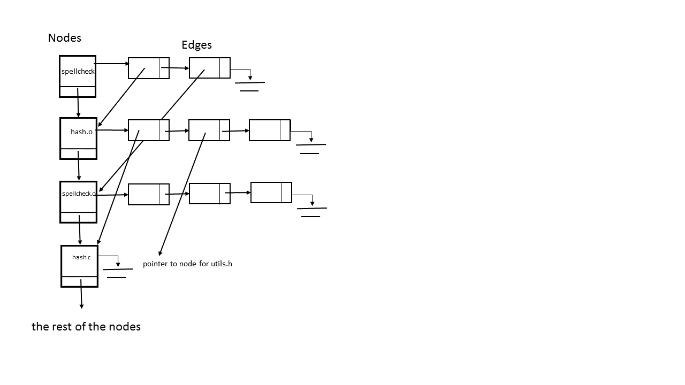

CSc 352 (Spring 2010): Assignment 9 (Dependency Graphs)
A dependency graph is a data structure that captures
the dependencies between different files as specified in a make file.
To keep this discussion specific, we will focus here on rules
in mymake format; however, the
concepts are not specific to this assignment and generalize readily to
the full make utility.
1. Structure
A dependency graph is a directed graph satisfying the following:
-
Each node represents a target in the input mymake file.
Thus, for each rule of the form
@target A : ...
@cmd ...
there is a node named A in the dependency graph.
-
There is an edge from node A
to node B if A "depends on" B,
i.e., if the input file contains a rule of the form
@target A : ... B
...
@cmd ...
The sequence of words comprising the
command for a rule (see the mymake spec)
is associated with the dependency graph node for the target for the rule.
The following example illustrates the notion of dependency graphs. Conciser
the following mymake file (this is Example 1 in
the mymake spec):
@target spellcheck.o : utils.h spellcheck.h spellcheck.c
@cmd gcc -Wall -c spellcheck.c
@target hash.o : hash.c utils.h hash.h
@cmd gcc -Wall hash.c
@target spellcheck : hash.o spellcheck.o
@cmd gcc *.o -o spellcheck
The corresponding dependency graph is as follows:

The ordering on the children of each node in a dependency graph is
significant: it reflects the left-to-right ordering on the dependencies
specified as part of a rule. For example, the first rule in the example
above gives the dependencies of the target
"spellcheck.o" in the following left-to-right
order:
utils.h
spellcheck.h
spellcheck.c
The children of the node corresponding to this target in the dependency
graph shown above reflect this ordering.
2. Post-order Traversal
Let the sequence of children of the node aTarget be
<aChild1, aChild2,
..., aChildn>,
where the ordering on the nodes aChildi
reflects as the ordering specified in the target
specification for the rule for aTarget, as discussed above.
The postorder traversal of the graph starting at node
aTarget is carried out as follows:
-
For i = 1, ..., n (in that order),
if the node aChildi has not yet been visited,
carry out a postorder traversal of the graph starting
at node aChildi.
-
Process the node aTarget.
For the purposes of this assignment, "processing a node"
simply means printing out its name, without any extraneous whitespace,
followed by a newline.
Example: A post-order traversal of the dependency graph shown above,
starting at the root node spellcheck, produces the
following:
hash.c
utils.h
hash.h
hash.o
spellcheck.h
spellcheck.c
spellcheck.o
spellcheck
Notice that utils.h only appears on the list once, even though it is
a child of hash.o and spellcheck.o. This is
because we don't want to visit a node a second time. What make does, and what in the next
assignment your program will do, is when a node is "visited", instead of printing its name
it will check whether it is a target that needs to be updated and run it's command if it does.
You don't need to do that more than once per target, and thus we don't "visit" a node more than once.
Avoiding visiting a node more than once will also keep your program from going into an
infinite loop if there are circular dependencies. For example, imagine if there was also a
dependency from hash.c to spellcheck. Then if you were
traversing the graph you and visited nodes more than once, you would go from
spellcheck to hash.o to hash.c to spellcheck
to hash.o to hash.c to spellcheck to . . . (forever)
2. Data Structure
A good data structure to use for representing a graph is an adjacency list. An adjacency list
has a linked list of structures that represent the nodes. In addition to the link to the next node,
the structure will contain whatever information is needed for a node. This might include things like
the target name, the command to build the target, perhaps a "visited" flag to aid in traversing the
graph. Also, each node will point to a linked list of "edges" from that node to other nodes.
An image of part of this structure for the graph pictured above is shown below. Not all the nodes are
shown. Also, even though the image doesn't show it, all edges conatin a pointer to a node.
